The slide of the lecture is on the left, the same figure on the right, computed in the browser from the same data. The ▶ button moves the parameter step by step.
Deterministic and stochastic trends · Spurious regression · The Dickey–Fuller test · Phillips–Perron, KPSS and their joint use · Structural breaks · ARIMA(p,d,q) models · ARIMA in practice
Deterministic and stochastic trends
Four series that drift
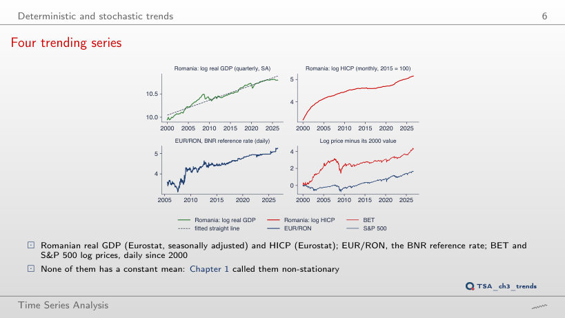
Answer
Far below it: the line fitted up to 2008Q3 has a slope of 1.56% per quarter, and GDP in 2026Q2 is 76 log points (100 × the difference of logs) below its extension. On the full sample the slope is 0.80% per quarter (about 3.2% a year), and the largest deviation, 17.5 log points, occurs in 2008Q3. After the 2009 recession GDP did not return to the earlier line: an argument for a stochastic trend, not for a fixed line plus noise.
Same drift, different memory
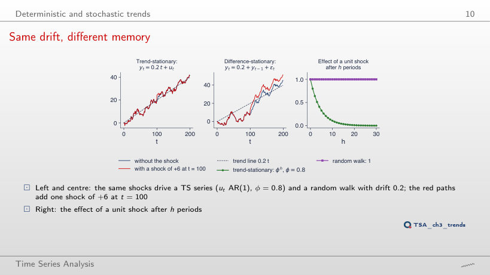
Answer
For φ < 1, almost nothing: 6φ⁹⁹ is 1.5 · 10⁻⁹ at φ = 0.8 and 0.04 at φ = 0.95; only at φ = 0.99 does 2.2 remain. At φ = 1 the whole shock, 6, remains, as for the random walk: the AR(1) noise becomes a random walk itself, and the two models coincide. With φ = 0.8, the effect of a unit shock is 0.107 after 10 periods, and the half-life is 3.1 periods.
Detrending a random walk
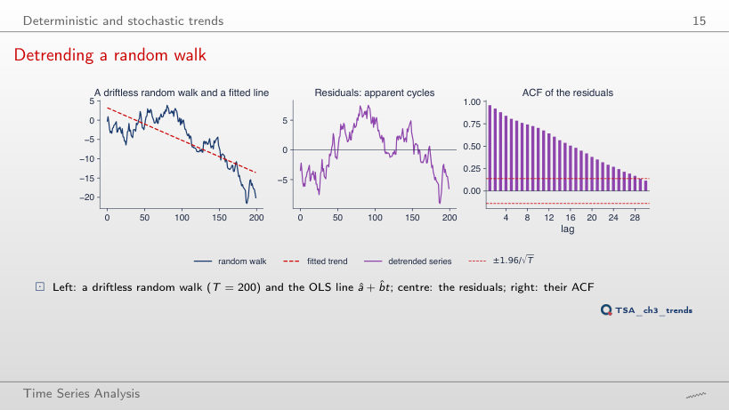
Answer
In 90.4% of the cases, not in 5%; the median R² is 0.44. On the path of the slide, R² = 0.61 and t = −17.7. The residuals have ρ̂(1) = 0.96 and stay positively autocorrelated up to lag 36: long cycles created by detrending (Nelson and Kang). With T = 50 the test still rejects in 82.0% of the cases: the error does not go away with a shorter or a longer sample.
Spurious regression
Spurious regression by simulation
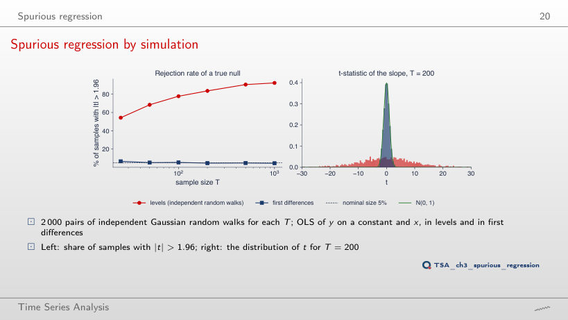
Answer
It rises, to 92.3%: the median |t| goes from 6.3 to 14.2, roughly like √T; the median R² stays around 0.17, and the median DW falls to 0.015. More data do not correct a spurious regression. In differences, the rate stays close to the nominal level: 4.65% at T = 200 and 4.5% at T = 1,000.
A spurious regression on real data
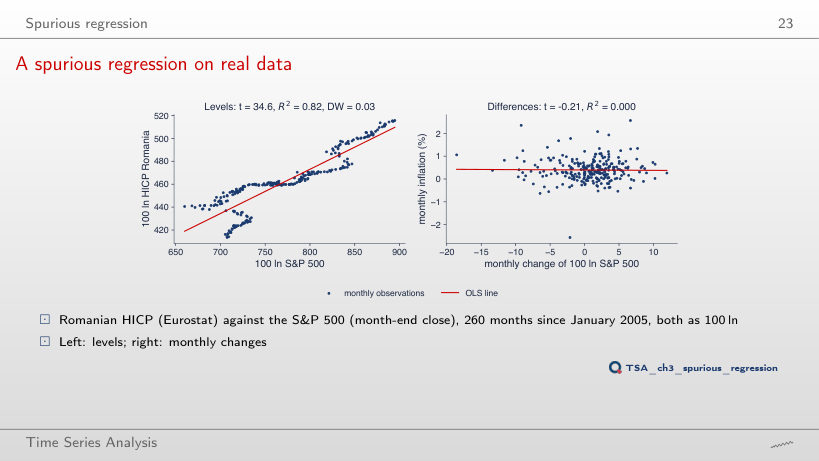
Answer
No: on 2005–2012, t = −0.72 and R² is below 0.01 in levels; on 2013–2026, t = 33.2 and R² = 0.87. In 2005–2012 stocks fell and recovered while prices rose; after 2013 both rise. In differences, on the full sample, t = −0.21 (p = 0.83) and R² = 0.0002. The Granger–Newbold rule flags the problem: R² = 0.82 > DW = 0.03.
Interpreting the HICP regression
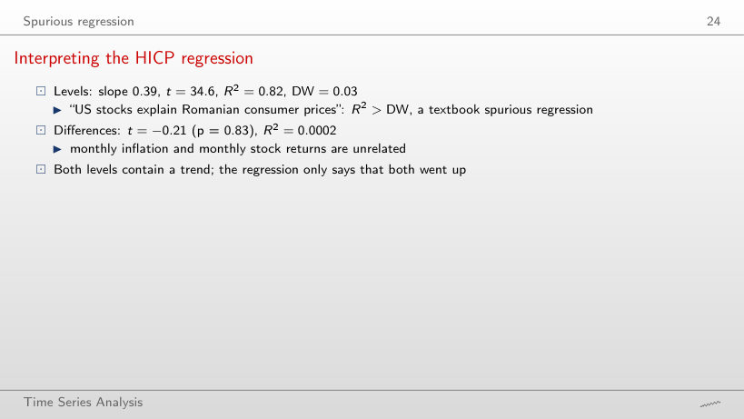
Worked example
Answer
No: with one regressor, R² = t²/(t² + n − 2) = 34.6²/(34.6² + 258) = 0.82. Both come from the same standard error, which is far too small because the error is itself a random walk; DW = 0.03 shows it. In monthly differences, t = −0.21 (p = 0.83) and R² = 0.0002: monthly inflation and stock returns are unrelated.
The Dickey–Fuller test
The Dickey–Fuller distributions
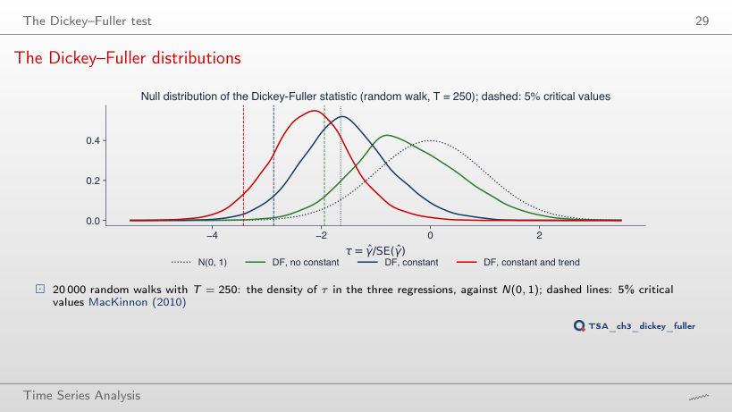
Answer
In 77.4% of the samples (46.1% with a constant, 9.8% without a constant), against 5% under N(0, 1). To reject in 5% of the cases, the critical value must move down to the 5% quantile of the Dickey–Fuller distribution: −1.95, −2.86 and −3.42 in the simulation; −1.94, −2.87 and −3.43 in the MacKinnon tables. With −3.42, the share for constant and trend is 4.99%.
Critical values of the Dickey–Fuller test
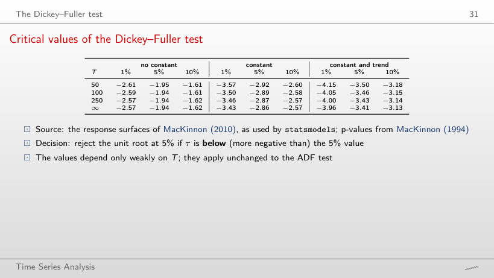
Answer
No: the 5% critical value for T = 50 is −2.92, and −2.90 > −2.92. With the asymptotic value −2.86 we would have rejected it: the critical values depend only weakly on T, but it matters when τ is close to the threshold. With the Normal value −1.645 the rejection would have been "clear" and wrong.
Worked example: Romanian real GDP
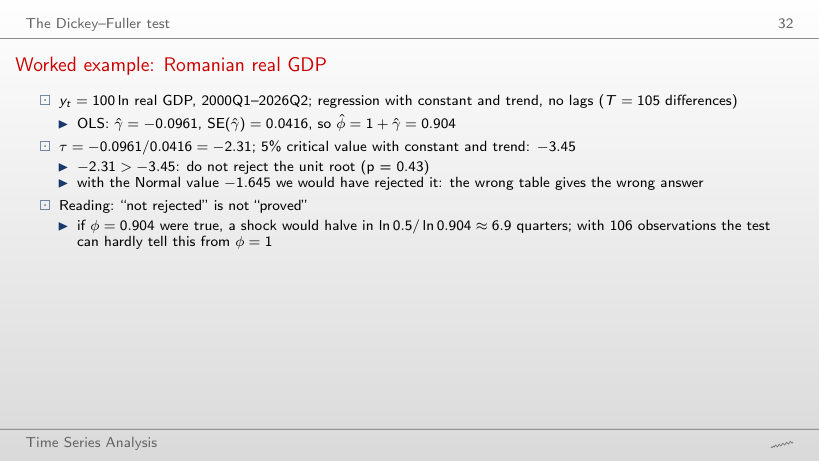
Worked example
Answer
τ becomes −1.80 (γ̂ = −0.0173, SE 0.0096), with critical value −2.89 and p = 0.38: still no rejection. Without a constant, τ = 3.29 and p ≈ 1. For a trending series the right alternative is the one with a trend: the slide has τ = −2.31 against −3.45 (p = 0.43). Here the conclusion does not depend on the deterministic terms, but the critical value changes with each case.
Choosing the number of lags k
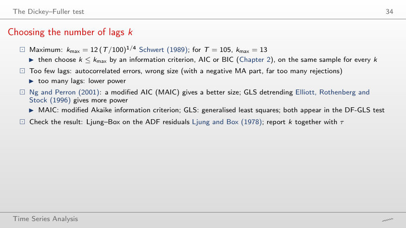
Worked example
Answer
BIC chooses k = 1, because it penalises each lag by ln N instead of 2: τ = −0.38 (p = 0.988), against τ = −0.96 (p = 0.949) with k = 6. The conclusion is the same: the unit root is not rejected. The lags change τ, which is why k is reported together with τ.
Size and power of the Dickey–Fuller test
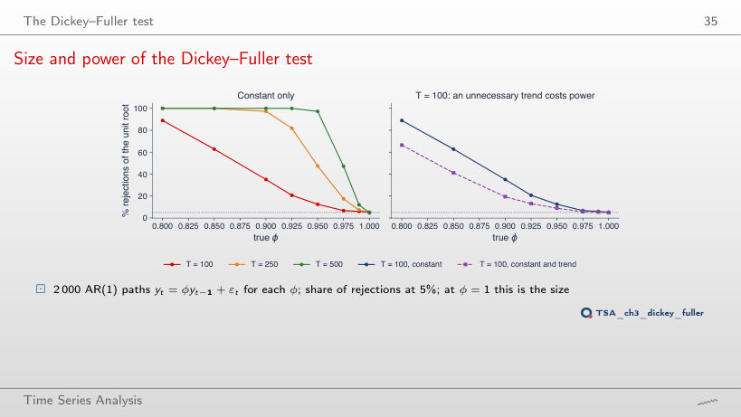
Answer
In 12.5% of the cases: the test almost never tells φ = 0.95 from φ = 1. With T = 250, 47.4%; with T = 500, 97.25%. At φ = 1 the shares are the size of the test: 5.3%, 5.2% and 4.65% with a constant. An unnecessary trend costs power: at T = 100 and φ = 0.9, 35.1% with a constant and 19.4% with constant and trend.
Interpreting the power curves
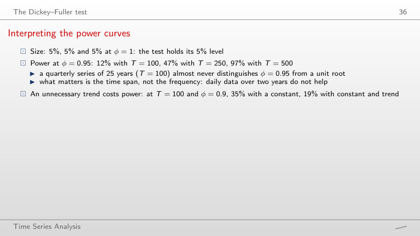
Answer
In 12.5% of the cases; with constant and trend, in 8.9%. To reach 97.3% it needs T = 500. At φ = 1 the test rejects in 5.3%, 5.2% and 4.65% of the cases (T = 100, 250, 500): the size is right, the power in short samples is low.
Phillips–Perron, KPSS and their joint use
The KPSS test: stationarity as the null
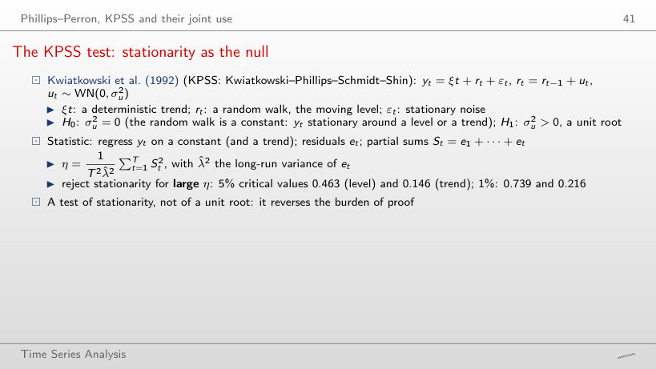
Worked example
Answer
η = 1.533 (L = 6), far above 0.463. Around a constant, the residuals contain the whole trend: negative at the start and positive at the end, and the partial sums make huge excursions. A trending series needs the trend version, with critical value 0.146; there 0.198 > 0.146 rejects stationarity at 5%, but not at 1% (0.216).
KPSS: why partial sums
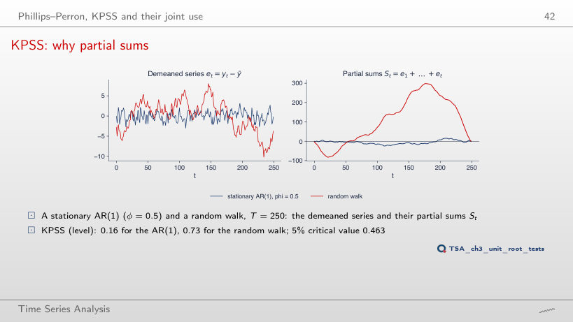
Answer
Only from φ = 0.95: KPSS = 0.565 > 0.463 (p = 0.027). At φ = 0.9 the statistic is 0.326 and the test does not reject, although the series is very persistent; at φ = 1 it rises to 1.213. For the random walk of the panel, KPSS = 0.733 (p = 0.011). The partial sums of a persistent series wander far from 0, and η grows.
ADF and KPSS together
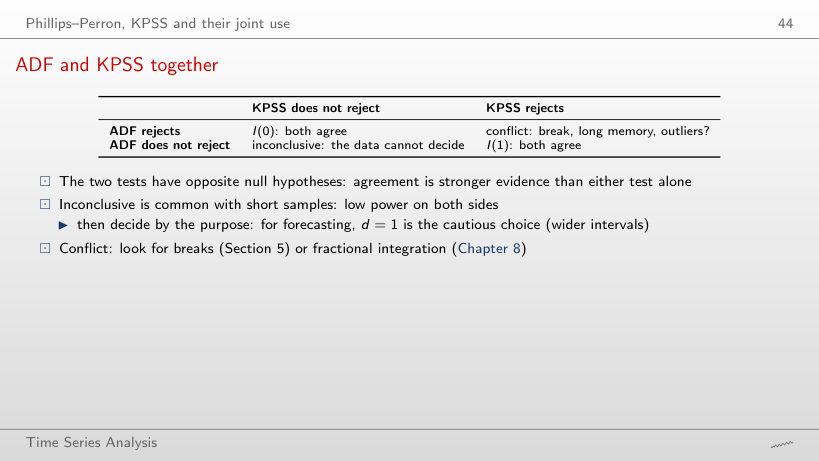
Answer
In "inconclusive": ADF still does not reject (p = 0.43), and KPSS = 0.198 is below the 1% critical value, 0.216. At 10%, 12-month inflation moves to I(1) (KPSS 0.404 > 0.347), and the BET and S&P 500 returns and US GDP growth move to "conflict": at the 10% level KPSS rejects more easily.
Unit-root tests on real series
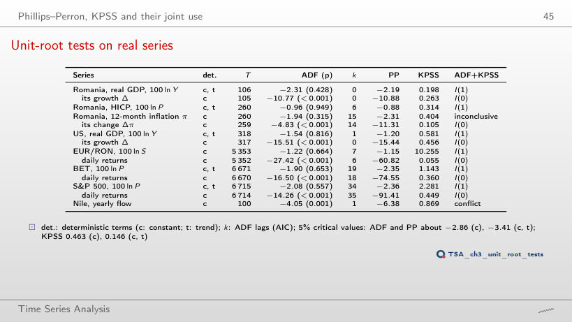
Answer
It becomes I(1): KPSS around a trend is 0.399 > 0.146, while ADF still does not reject (τ = −1.99, p = 0.61). The BET returns move to "conflict" (KPSS 0.250 > 0.146). The verdict depends on the alternative chosen; for series without a trend, the constant is the choice of the lecture.
Structural breaks
A level shift misleads the ADF test
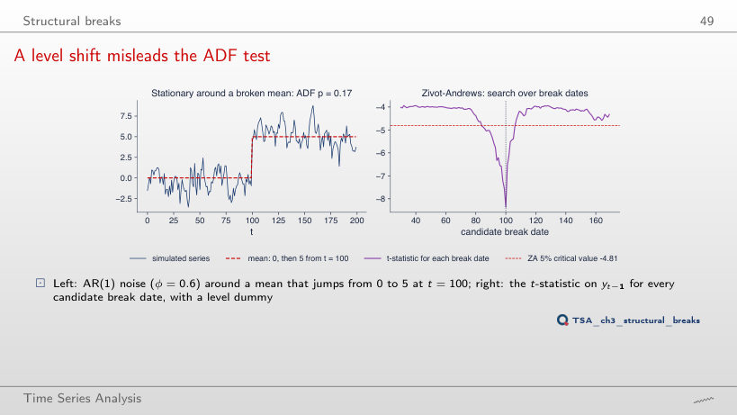
Answer
From a jump of 3.5 (p = 0.056); at 3, p = 0.030. At the jump of the lecture, 5, p = 0.17, and on 2,000 series with the same jump the DF test rejects in 71.5% of the cases (without the jump: 100%); at a jump of 7, only in 0.55%. Zivot–Andrews includes the break and rejects for every jump: at a jump of 5, ZA = −7.47 (one lag chosen by AIC), far below −4.81, with the level changing from t = 100. The curve on the right is computed without lags: its minimum, −8.37, is reached at t = 100; −7.47 is the test statistic, not the minimum of the curve.
Interpreting the simulated break
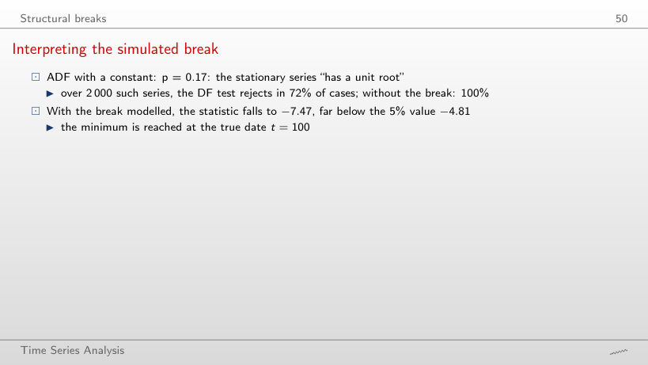
Answer
No. The curve of the chart, without lags, has its minimum −8.37 at t = 100. The statsmodels Zivot–Andrews statistic chooses the lags by AIC (here 1 lag) and gives −7.47, with the break also at t = 100. Both are far below −4.81, so the conclusion does not change: the series is stationary around a mean with one break.
Zivot–Andrews on two real series
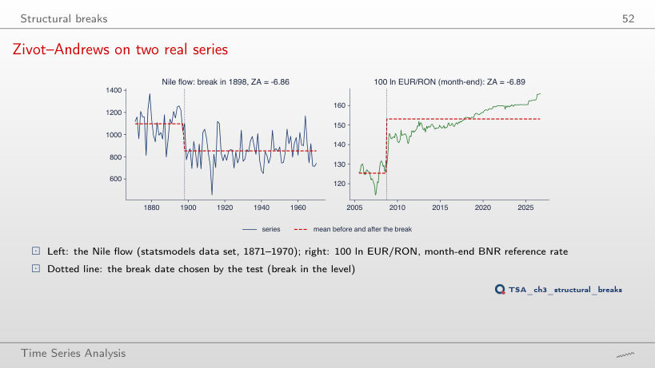
Answer
ZA = −4.40, with a 5% critical value of −4.41 (p = 0.051): the unit root is no longer rejected at 5%, and the chosen date moves to July 2009. With a break in the level and the trend: −6.83, below −5.07, in October 2008. For the Nile, all three variants reject (−6.86, −5.68, −6.84); the level breaks are dated 1898, the trend break 1914. The result depends on the assumed form of the break.
Interpreting the two breaks
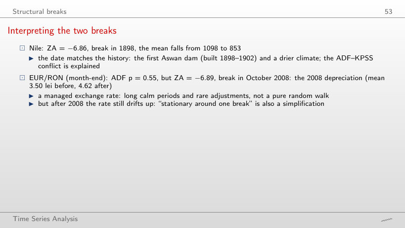
Answer
Just not: ZA = −4.40 and the 5% critical value is −4.41 (p = 0.051), with the break in July 2009. With the break in the level (−6.89) or in both (−6.83, critical value −5.07) it rejects, with the break in October 2008. For the Nile all three versions reject.
ARIMA(p,d,q) models
Romanian GDP: identification
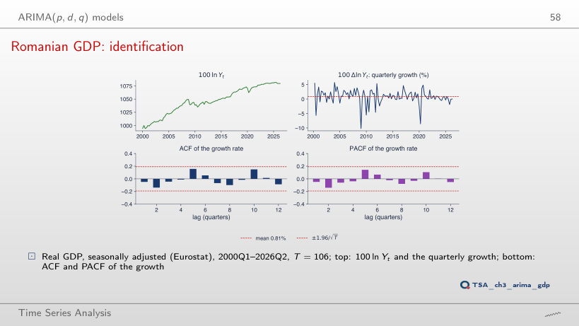
Answer
Not entirely: with 35 growth rates (2000Q2–2008Q4), the mean is 1.57% per quarter, ρ̂(1) = −0.27, and one ACF value leaves the ±0.33 band; the Ljung–Box Q*(8) = 11.1 (p = 0.20) does not reject white noise, though. On the full sample: mean 0.81%, ρ̂(1) = −0.05, ρ̂(2) = −0.14, Q*(8) = 7.3 (p = 0.51); up to 2019Q4, Q*(8) = 4.2 (p = 0.84).
Model choice by AICc
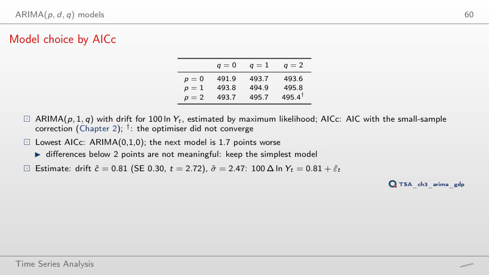
Answer
No: differences below 2 points are not informative, so we keep the simplest model. For every sample end from 2015Q4 to 2026Q2, the lowest AICc and the lowest BIC belong to ARIMA(0,1,0); the drift estimated on the full sample is 0.81 (SE 0.30, t = 2.72).
Romanian GDP: residual checks
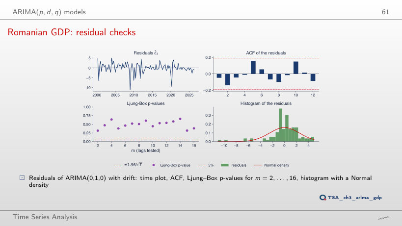
Answer
No: the optimisation did not converge, and its AICc is 495.4, against 491.9 for ARIMA(0,1,0) with drift. ARIMA(0,1,0) already leaves uncorrelated residuals: Q*(8) = 7.3 (p = 0.51), and Q*(12) has p = 0.54. Extra parameters reduce the residual autocorrelation mechanically. What remains in every model are the fat tails: for ARIMA(0,1,0), kurtosis 7.9, Jarque–Bera 145 and the residual of −11.0 in 2009Q1.
Interpreting the residual checks
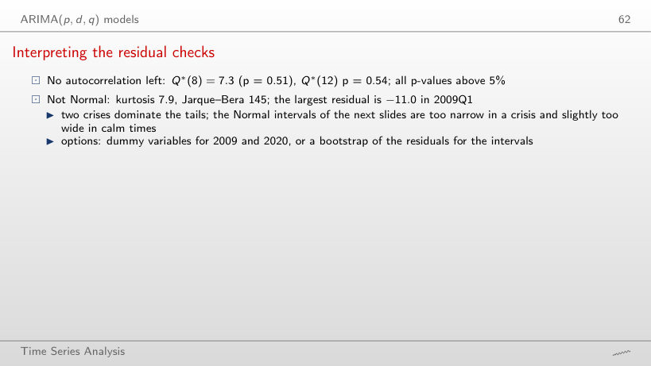
Worked example
Answer
With m − p − q = 8 − 2 = 6: Q*(8) = 5.81 and p = 0.44. For ARIMA(0,1,0), Q*(8) = 7.28 with 8 degrees of freedom and p = 0.51. Without the correction, the p-values of models with ARMA parameters would be too large.
Forecasting with ARIMA
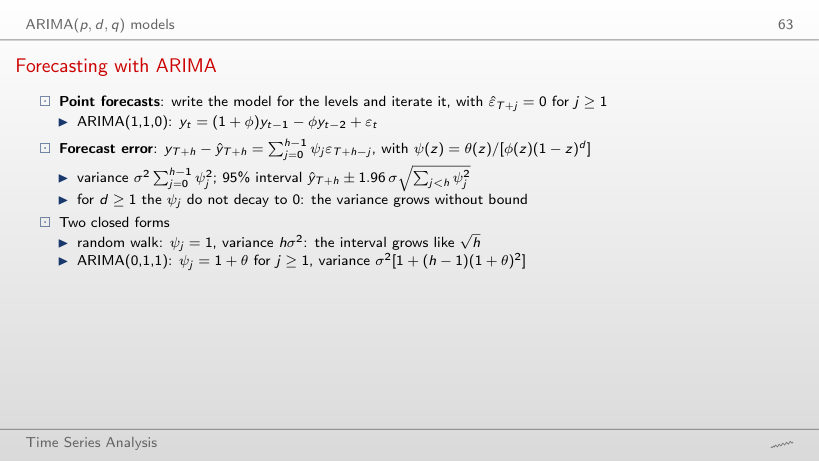
Worked example
Answer
2.53 times: 30.6% against 12.1% of GDP. The TS interval stops at 1.96σ̂/√(1 − φ̂²) = 12.09, while the DS one grows like √h. At h = 12 the half-widths are 16.8% and 11.2%, as on the slide.
Worked example: ARIMA(1,1,0) forecasts
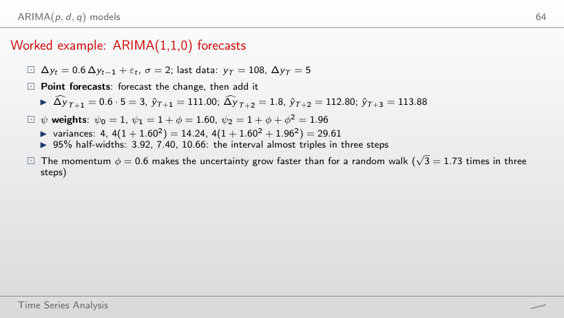
Worked example
Answer
The forecasts are all 108, and the half-widths 3.92, 5.54 and 6.79 = 1.96 · 2 · √h. With φ = 0.6 the forecasts rise to 111.00, 112.80 and 113.88, and the half-widths to 3.92, 7.40 and 10.66: the momentum passes each shock on to the following changes as well.
How fast the intervals grow
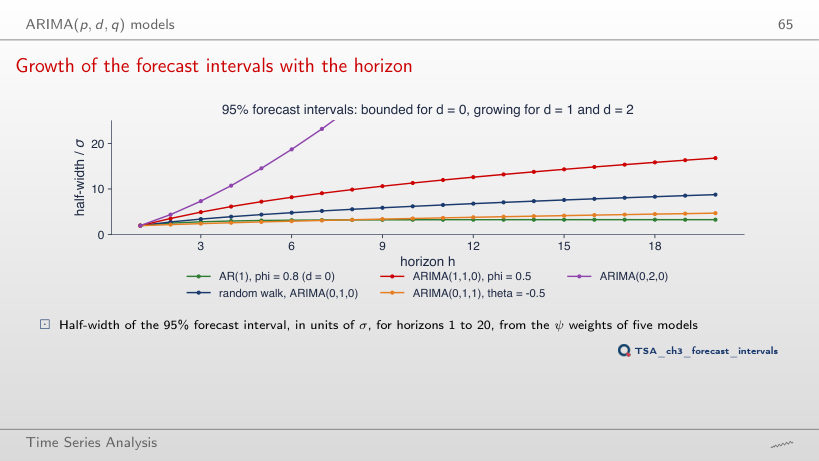
Answer
It rises with θ: 2.14σ at θ = −0.9, 4.70σ at θ = −0.5, 8.77σ at θ = 0 (the random walk) and 12.96σ at θ = 0.5. The variance is σ²[1 + (h − 1)(1 + θ)²]: a negative θ offsets part of every shock. For the ARIMA(1,1,0), the half-width at h = 20 is 16.78σ with φ = 0.5 (the chart) and 20.53σ with φ = 0.6 (the worked example, where at h = 3 it is 5.33σ, i.e. 10.66 with σ = 2). The AR(1) with φ = 0.8 levels off at 3.27σ.
Interpreting the interval widths
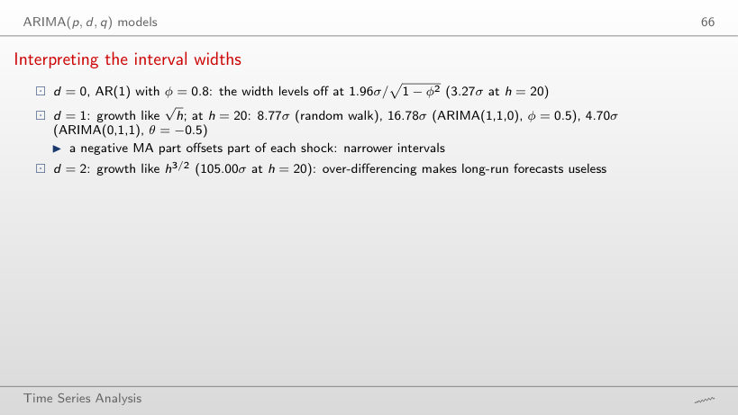
Worked example
Answer
φ = 0.5, the value of the chart. With φ = 0.6 the half-width at h = 20 is 20.53σ. At h = 1 both give 1.96σ, and at h = 4: 6.14σ (φ = 0.5) and 6.83σ (φ = 0.6). The random walk has 8.77σ at h = 20.
Romanian GDP: two forecasts
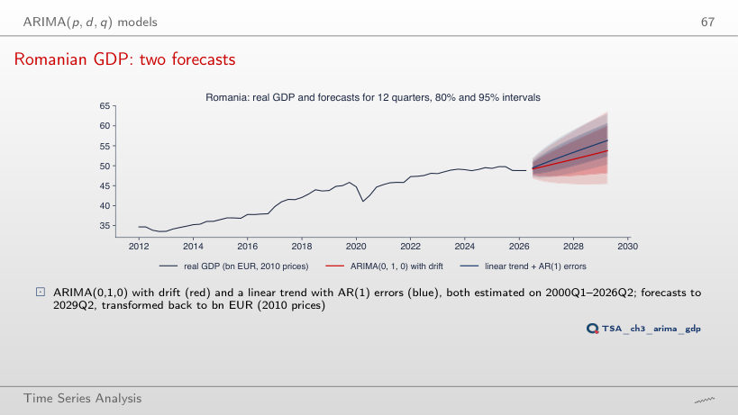
Answer
The trend-stationary model, but only just: RMSE 7.2 log points, against 7.6 for ARIMA(0,1,0) with drift; both missed the 2020 drop. From 2015Q4 the gap is larger (2.6 against 4.7), and from 2023Q2 the ranking reverses (6.5 against 5.6). From 2026Q2, ARIMA(0,1,0) gives 53.8 bn EUR (2010 prices) after 12 quarters, with a 95% half-width of 16.8 log points; the trend model gives 56.3 bn and 11.2. ADF and KPSS classify the level of GDP as I(1) (p = 0.43; 0.198 > 0.146), but the low power of the tests does not rule out the trend model: the choice of d changes the forecast and its interval.
Interpreting the GDP forecasts
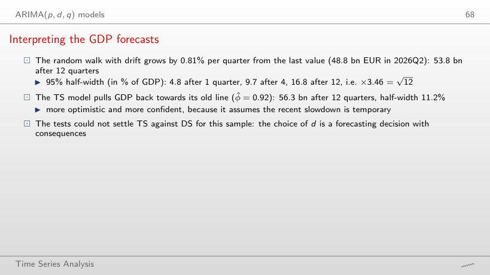
Answer
At 5%, ADF does not reject (p = 0.43) and KPSS rejects (0.198 > 0.146): I(1). The evidence is weak, though: at 1% KPSS no longer rejects (0.198 < 0.216), and with T ≈ 100 the power of ADF at φ = 0.9 is 19%. The choice of d matters: after 12 quarters, 53.8 bn EUR with half-width 16.8% (DS) against 56.3 bn EUR with 11.2% (TS).
Over-differencing Romanian GDP
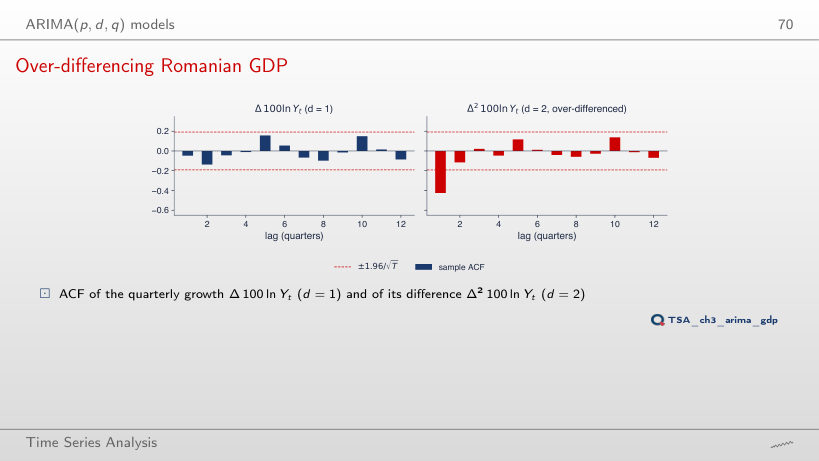
Answer
All three: ρ̂(1) falls from 0.13 to −0.49, the variance rises from 1.22 to 2.12, and an MA(1) fitted to Δ² gives θ̂ = −0.986 (SE 0.008). For Romania: ρ̂(1) from −0.05 to −0.43, the variance from 6.16 to 12.80, θ̂ = −0.987 (SE 0.080). A third difference makes the symptoms worse: for Romania the variance rises to 35.6 and ρ̂(1) to −0.57.
ARIMA in practice
Romanian inflation: d = 0 or d = 1?
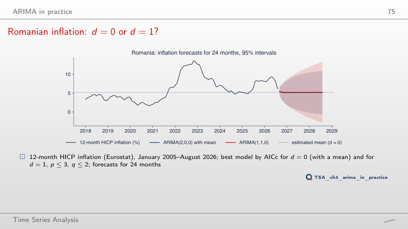
Answer
No: AICc does not compare models with different d, because with d = 1 the likelihood is computed for Δπ, another series. We choose d by tests and judgement: KPSS (0.404 < 0.463) keeps d = 0, ADF (p = 0.32) suggests d = 1. The forecasts after 24 months are close, 5.1% and 5.2%, but the 95% intervals differ: [−0.6, 10.9] and [−2.9, 13.3]. ARIMA(3,1,2) has an AICc of 441.1, but its optimisation did not converge.
EUR/RON: ARIMA against the random walk
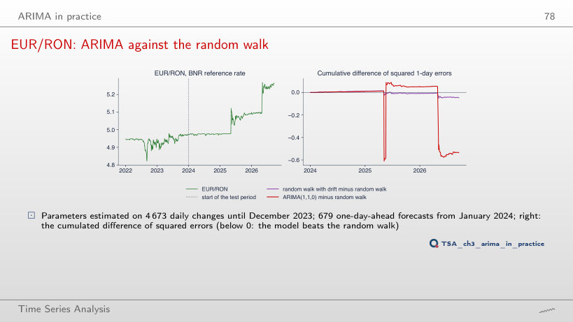
Answer
No: RMSE 0.1307, against 0.1304 for the random walk, a loss of 0.19%. With the test period from 2019, 2020, 2022 or 2024, the gain is 2.1–2.3%; in the lecture (from 2024), 0.1300 against 0.1330, and over 20 days 0.638 against 0.667 (4.3%). The gain depends on the period chosen and comes from a few days with jumps of the rate; a formal comparison needs the Diebold–Mariano test.
A classic series: US real GDP after 2007
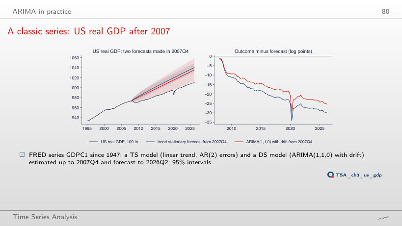
Answer
No: from 2000Q4, the gap at the end is −34.7 for the trend model (half-width of the 95% interval: 7.9) and −34.5 for ARIMA(1,1,0) with drift (28.1). From 2007Q4: −30.1 (8.2) and −25.4 (22.9); from 2019Q4: −8.0 (11.1) and −5.0 (13.2). From 2000 and from 2007 neither interval covers the outcome; from 2019 both do. Both models extend the drift from before the origin, and growth after 2008 was slower.
Simulations: shocks from the Normal distribution, drawn with the seeds of the chapter code; the Monte Carlo results are those of the lecture. Romanian GDP: Eurostat, chain-linked volumes (2010 prices), seasonally adjusted, in the version used in the lecture. HICP: Eurostat, up to August 2026. EUR/RON: BNR reference rate; BET and S&P 500: the course market data, up to 18 September 2026. US GDP: FRED GDPC1, up to 2026Q2. Nile: the statsmodels data set, 1871–1970.